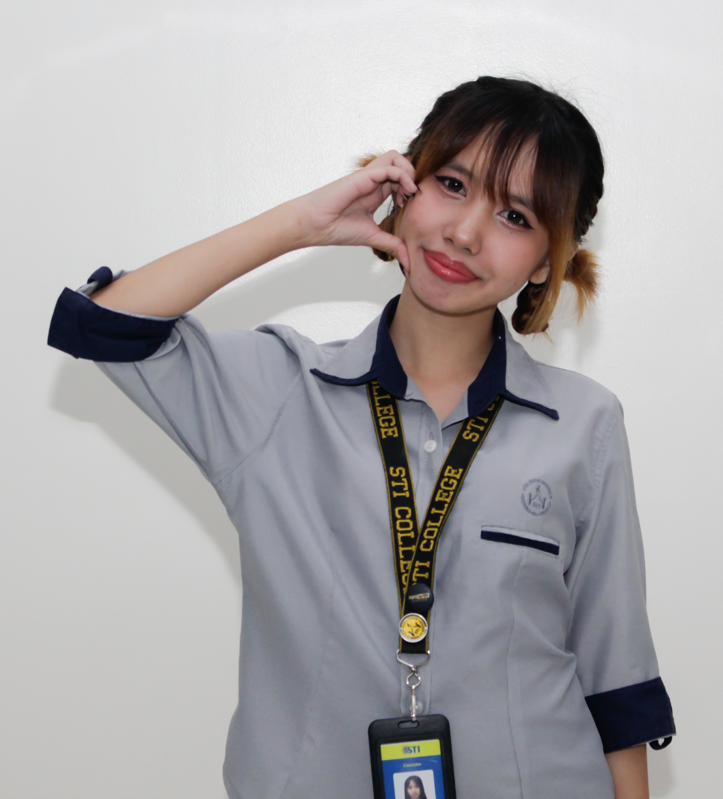

Roblox game development
Head of development team, lead developer, and graphic designer.
DEVELOPER · DESIGNER · CREATIVE LEAD
Hi, I'm Alysa Julien Guevarra. I turn ideas into thoughtful digital experiences, playful worlds, and visuals with a story to tell.

I’m a fourth year BSIT student at STI College Calamba, working at the intersection of development, design, and storytelling.
I build websites and interactive projects, create games with C# and Python, develop Discord applications, and shape graphics for communities and events. I love making technology feel human.
Explore my GitHub ↗Digital experiments, stories, and playful experiences.
A candy colored camera playground with snapshots, stickers, effects, and creative expression.
Visit live site ↗An imaginative narrative project where technology and storytelling meet.
View project ↗UI/UX, systems thinking, marketing direction, and team leadership for a game project.
Play on itch.io ↗A Discord assistant made to bring useful tools and personality to a server.
View project ↗Publication graphics, social content, visual stories, and commissioned work.
Browse the gallery ↗Code, visual design, team coordination, and the details that make an experience memorable.
HTML · CSS · JavaScript · TypeScript · C# · Python · Java fundamentals · Discord applications · Roblox games
Web design · UI/UX · graphic design · photography · publication graphics · social media content
Project coordination · system analysis · creative direction · documentation · communication
Microsoft Office · SAP S/4HANA fundamentals
Creative work has taught me to lead and collaborate for real communities.
Head of development team, lead developer, and graphic designer.
Graphics team member supporting event materials.
Vice President and Editor, then Secretary.
First and second year representative; publication and event graphics.
Photographer and Treasurer.
Have a project, collaboration, or creative idea? I’d love to hear about it.
Founder of Yjinomoto · I make Discord apps.